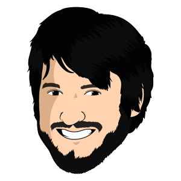

…

Service Worker
Tato stránka se „nainstalovala“ pouhým otevřením. Pravda, umí jenom posílat notifikace. Ale nebyl by problém implementovat i offline funkcionalitu.
Pokud i vy chcete své stránce dodat funkcionalitu, kterou tu vidíte, budou vás možná zajímat následující odkazy:
- Service Worker na W3C (suché a akademické, ale je to zdrojový dokument)
- Service Worker tutoriál (včetně dema a jeho kódu)
chrome://serviceworker-internals(podívejte se, kde všude jste už nevědomky na Service Workers narazili)- Add to Homescreen tutoriál (důvod, proč si můžete můj ksicht dát na plochu)
- Firebase (důvod, proč se hláška i počet odběratelů updatují v reálném čase)
- Dart (důvod, proč je zdroják čitelný a nemá callback hell i přes značnou míru asynchronie)
- Kód této stránky (na githubu)
Pokud vás zajímají pokročilé technologie na webu obecně, podívejte se ještě na moji umělou inteligenci nebo fuzzy logiku pro weby.